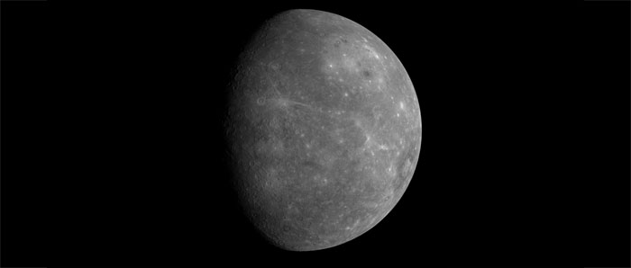

Mercure
Mercure est la planète la plus proche du Soleil. C'est aussi celle qui décrit l'orbite la plus excentrique : sa distance au Soleil étant de 45 900 000 km au plus proche (périhélie) et de 69 700 000 km au plus loin (aphélie). Elle boucle cette orbite en 88 jours et effectue un tour complet sur elle-même en 59 jours. Sa surface est donc soumise alternativement à de longues périodes de chaleur ou de froid. La température peut varier de +350 °C à midi à -170 °C la nuit.
Mercure est difficile à voir de la Terre, car trop proche du Soleil. On ne peut l'observer que le matin, avant le lever du Soleil ou le soir, après son coucher. Elle présente, comme la Lune, des phases successives : étant invisible quand elle passe entre la Terre et le Soleil, ou pleinement éclairée quand elle se trouve à l'opposé du Soleil. C'est à son dernier quartier qu'on la voit le mieux.
Mercure est la plus petite des quatre planètes telluriques : son diamètre équatorial - 4 878 km - n'atteint pas la moitié de celui de la Terre. Elle n'a pas de satellite.

Source : Wikipédia
Mercure est une planète rocailleuse, probablement constituée, comme la Terre, d'un noyau de fer entouré d'un manteau de silicates. Pratiquement dépourvue d'atmosphère, elle possède cependant un champ magnétique qui capte l'hélium du vent solaire. Sa surface, criblée de cratères, ressemble à celle de la Lune. Les plus gros cratères datent de 4 à 4,5 milliards d'années, peu après la formation des planètes. Les plus petits, apparaissant en superposition, sont sans aucun doute plus récents.
Le bassin de la Chaleur
Nous ne connaissons pas, à ce jour, de formation plus remarquable sur la surface de Mercure que le "bassin de la Chaleur". Toutefois, la seule sonde à avoir survolé la planète, Mariner-10, ne nous a révélé qu'une partie seulement de son visage. Ce bassin, d'un diamètre de 1 300 km, a été comparé à la Mare Imbrium de la Lune. Il est entouré d'un anneau montagneux et d'un réseau rayonnant de crêtes et de vallées. Son plancher présente de multiples fractures.
Source : Étoiles et planètes, Gründ, 1988
Plan du site | Contact | Site réalisé par Mathieu Morainville.